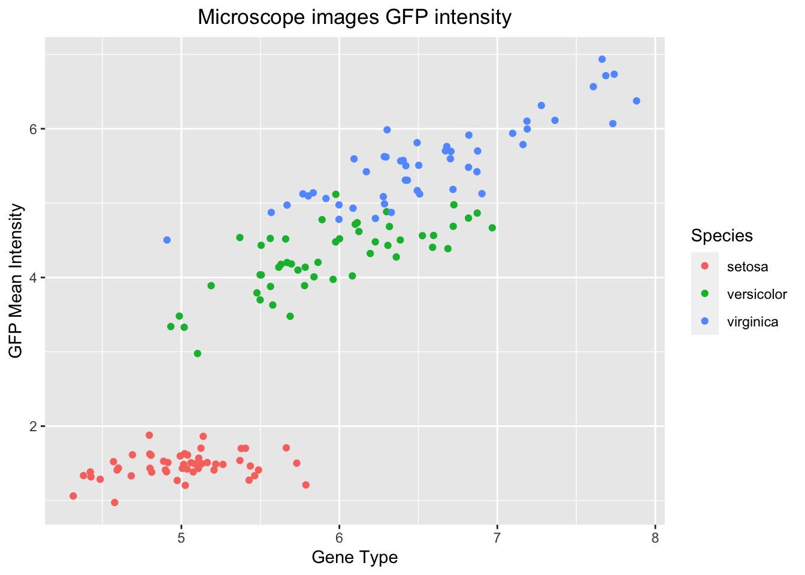

Chapter 3 R and Rstudio
3.1 Rstudio global settings Export/Import. Configurations and settings..
After Installing R and Rstudio with homebrew, R studio settings are need. Doing it manually takes time and usually all changes are not performed.
For more information on RStudio Link to site.
From RStudio 1.3, the settings and configuration were overhaul.
User Preferences
All the preferences in the Global Options dialog (and a number of other preferences that aren’t) are now saved in a simple, plain-text JSON file named rstudio-prefs.json. Here’s an example:
"posix_terminal_shell": "bash",
"editor_theme": "Night Owl",
"wrap_tab_navigation": falseThe example above instructs RStudio to use the bash shell for the Terminal tab, to apply the Night Owl theme to the IDE, and to avoid wrapping around when navigating through tabs. All other settings will have their default values.
By default, this file lives in AppData/Roaming/RStudio on Windows, and ~/.config/rstudio on other systems. While RStudio writes this file whenever you change a setting, you can also edit it yourself to change settings. You can back it up, or put it in a version control system. You’re in control!
If you’re editing this file by hand, you’ll probably want a reference. A full list of RStudio’s settings, along with their data types, allowable values, etc., can be found in the Session User Settings section of the RStudio Server Professional Administration Guide.
\(\color{red}{\text{How to get to the file?}}\)
1. If file is hidden by attibute, Unhide all files with Command-Shift-PERIOD. (To hide the files again, press the same key shortcut).
2. Open Terminal> type open ~/.config/rstudio, this will open the a finder window showing the folder contaning the file, look for the file rstudio-prefs.json.
3. Examine the file and check if preferences correspond to the ones set in R preferences.
4. Then copy/paste the file in Rstudio of the new machine (save a copy of original file before replacing with old preferences or manually modified the file).
5. Restart R.
Transfer of R global settings successful!!
3.2 Copy/Transfer the packages installed on one computer or R version to another using Scripts.
3.2.1 Method 1: (!THE ONLY METHOD THAT WORKED) USE THIS ONE!!!!!].
Link to site
Originally from [here] (http://stackoverflow.com/questions/1401904/painless-way-to-install-a-new-version-of-r-on-windows)
- Run on old computer / r version (2015MBP)
# update, without prompts for permission/clarification
update.packages(ask = FALSE)
# Set working directory
getwd()
setwd() # "/Users/Marcelo-Rosales/Box Sync/Documents/R/Rmarkdown/"
getwd()
# List all packages and save in a file. save() command
packages <- installed.packages()[,"Package"]
save(packages, file="Rpackages")- Run on new computer / r version (2020MBP) txtcol()
# Set working directory
getwd()
setwd() # "/Users/marcelorosales/Box Sync/Documents/R/Rmarkdown"
getwd()
#Load list of packages and install.
load("Rpackages")
for (p in setdiff(packages, installed.packages()[,"Package"]))
install.packages(p)
Check <- installed.packages()3.2.2 Method 2: Quick Way of Installing all your old R libraries on a New Device. DOES NOT WORK!!
Link here. To install all the libraries that I had installed in my previous laptop. I did the following:
Step 1: Save a list of packages installed in your old computing device (from your old device). !Warning Before saving file make sure you are in the right working directory and make sure you KNOW WHERE THE FILE IS STORED.
# Set working directory where the files will be store.
installed <- as.data.frame(installed.packages())
getwd()
setwd("/Users/Marcelo-Rosales/Box Sync/Documents/R/Rmarkdown") # modify folder as needed.
write.csv(installed, 'installed_previously.csv')This saves information on installed packages in a csv file named installed_previously.csv. Now copy or e-mail this file to your new device and access it from your working directory in R.
Step 2: Create a list of libraries from your old list that were not already installed when you freshly download R (from your new device).
installedPreviously <- read.csv(file.choose(), header=TRUE) # header = true, to avoid Error bad restore magic number.
getwd()
setwd("/Users/Marcelo-Rosales/Box Sync/Documents/R/Rmarkdown") # modify folder as needed.
baseR <- as.data.frame(installed.packages())
write.csv(baseR, 'baseR.csv')
toInstall <- setdiff(installedPreviously, baseR)We now have a list of libraries that were installed in your previous computer in addition to the R packages already installed when you download R. So you now go ahead and install these libraries.
Step 3: Download this list of libraries.
install.packages(toInstall)That’s it. Save yourself the trouble installing packages one-by-one all over again. LIES!!
3.2.3 Since the code above is not interactive, I modify to suit my needs.(DOES NOT WORK NEITHER)
Since the function choose.dir is only for Windows and not for Mac. I created a custom dir.choose function
Run this script in the old computer.
library(rstudioapi) # Need this package for the prompt windows.
# 1. Costume made function to choose a directory interactively.-----------------
dir.choose <- function() {
system("osascript -e 'tell app \"RStudio\" to POSIX path of (choose folder with prompt \"Marcelo asks where to save the file.\")' > /tmp/R_folder",
intern = FALSE, ignore.stderr = TRUE)
p <- system("cat /tmp/R_folder && rm -f /tmp/R_folder", intern = TRUE)
return(ifelse(length(p), p, NA))
}
# 2. Save the list of all the packages installed in my old computer (old device).
oldRpks <- as.data.frame(installed.packages())
outdir <- dir.choose()
filename <- showPrompt(title = " asks:", message = "Enter name of the file with out extension or special characters", default = "oldRpks")
filename
# As .csv file.
write.csv2(oldRpks,
file = print(paste0(outdir, filename, ".csv")),
row.names = FALSE)
# 3. Copy the oldRpks to the new computerRun this script in the new computer.
# 4.Create a list of packages from my new computer (new device), Since Rstudio installation is new, packages are the "basic packages that come form R". I will name the file baseRpks.
baseRpks <- as.data.frame(installed.packages())
# 5. Load the oldRpks file created in the old Rstudio into the new computer.
oldRpks <- read.csv(file.choose(), header=TRUE)
# 6. Then by subtract matching packages (setting the difference), the remaining list will be the packages that are not installed in the new computer. /
toInstall <- setdiff(installedPreviously, baseR)
# 7. Install the packages from the list.
install.packages(toInstall)3.3 Interactive Plots using R Markdown Notebook.
Using Normal ggplot graphics, is possible to add 3d interaction with the plotly package.
ggplot2 example
library(ggplot2)
a <- ggplot(iris, aes(x=Sepal.Length, y=Petal.Length, color=Species)) +
geom_jitter() +
xlab("Gene Type") +
ylab("GFP Mean Intensity") +
ggtitle("Microscope images GFP intensity") +
theme(plot.title = element_text(hjust = 0.5))
a
Using ggplotly with in ggplot2,
library(plotly)
ggplotly(a)Plotly example
Here a Plotly R Open Source Graphing Library.
And R Figure Reference: Single Page. How are Plotly attributes organized?
# Using plotly
library(plotly)
fig <- plot_ly(iris, type="scatter", x= ~Sepal.Length, y= ~Petal.Length, color= ~Species, mode="markers")
figlibrary(plotly)
mtcars$am[which(mtcars$am == 0)] <- 'Automatic'
mtcars$am[which(mtcars$am == 1)] <- 'Manual'
mtcars$am <- as.factor(mtcars$am)
fig2 <- plot_ly(mtcars, x = ~wt, y = ~hp, z = ~qsec, color = ~am, colors = c('#BF382A', '#0C4B8E'))
fig2 <- fig2 %>% add_markers()
fig2 <- fig2 %>% layout(scene = list(xaxis = list(title = 'Weight'),
yaxis = list(title = 'Gross horsepower'),
zaxis = list(title = '1/4 mile time')))
fig2Export Plotly graphs into MS PowerPoint.
3.4 R Markdown, R Notebook, R Bookdown, R Blogdown
3.4.1 R Markdown
Markdown is a simple formatting syntax for authoring HTML, PDF, and MS Word documents. For more details on using R Markdown see http://rmarkdown.rstudio.com.
When you click the Knit button a document will be generated that includes both content as well as the output of any embedded R code chunks within the document. You can embed an R code chunk like this:
summary(cars)## speed dist
## Min. : 4.0 Min. : 2.00
## 1st Qu.:12.0 1st Qu.: 26.00
## Median :15.0 Median : 36.00
## Mean :15.4 Mean : 42.98
## 3rd Qu.:19.0 3rd Qu.: 56.00
## Max. :25.0 Max. :120.003.4.1.1 Including Plots
You can also embed plots, for example:

Note that the echo = FALSE parameter was added to the code chunk to prevent printing of the R code that generated the plot.
It is a way to edit text that can be converted in HTML, PDF, Word with the knit function.
- Install markdown from CRAN and use.
- See for markdown syntax cheat sheets.
Here a R Markdown: The Definitive Guide.
Includes information of Bookdown in chapter 12 and blogdown in chapter 10.
R Markdown Cookbook.
Creating Websites with R Markdown.
Authoring Books with R Markdown.
Themes for R Markdown.
Using R Markdown Notebook.
Markdown has different options available:
- As Document: HTML, PDF, Word.
- Presentation: HTML (ioslides), IITML (Slidy), PDF, PowerPoint.
- Shiny: Shiny Document, Shiny Presentation.
- From Template: Interactive Tutorial, Reprex (lots of features), Reprex (minimal), GitHub Document (Markdown), Package Vignete (HTML).
Presentation in:
- HTML (ioslides): HTML presentation viewable with any browser (you can also print ioslides to PDF with Chrome).
- IITML (Slidy): HTML presentation viewable with any browser (you can also print Slidy to PDF with
chrome.).
- PDF (Beamer): PDF output requires TeX (MiKTeX on Windows, MacTex 2013+ on OS X, TeX Live 2013+ on Linux).
- PowerPoint: PoverPoint previewing requires an istallation of PowerPoint or OpenOffice.
Shiny:
- Shiny Document: Can create an HTML document with interactive Shiny components. Shiny Document Test01.Rmd
- Shiny Presentation: Creates an IOSlides presetntion with interactive shiny components.
From Template:
- Interactive Tutorial (learn)
- Reprex (lots of features)
- Reprex (minimal)
- GitHub Document (Markdown)
- Package Vignete (HTML)
3.4.2 R Notebook
R Markdown Notebook. When you execute code within the notebook, the results appear beneath the code.
Try executing this chunk by clicking the Run button within the chunk or by placing your cursor inside it and pressing Cmd+Shift+Enter.
plot(cars)
Add a new chunk by clicking the Insert Chunk button on the toolbar or by pressing Cmd+Option+I.
When you save the notebook, an HTML file containing the code and output will be saved alongside it (click the Preview button or press Cmd+Shift+K to preview the HTML file).
The preview shows you a rendered HTML copy of the contents of the editor. Consequently, unlike Knit, Preview does not run any R code chunks. Instead, the output of the chunk when it was last run in the editor is displayed.
A way to organize the Markdown text in section with the ability to preview the text without the need of knitting.
1. File> New file> Notebook.
2. To preview R Notebook, you have to save the file.
3. Once you saved the file, the preview will be available in the Viewer.
4. In the Meta-data leave the output as html_notebook.
5. And then start coding.
3.4.3 R Bookdown.
A way to manage several Rmad files and compile them in a gitbook style, with the possibility of multiple types of outputs, with support of figure/table number crossreference and can embed interactive content like HTML widgets/Shyny apps (if output is not html, take screenshots automatically) and compile as a gitbook.
Bookdown also can be uploaded to github where other collaborators can proof read and commit changes if nessesary.
DEMO for Authoring Books with R Markdown.¥
Download the GitHub repository https://github.com/rstudio/bookdown-demo as a Zip file, then unzip it locally.
Install the RStudio IDE. Note that you need a version higher than 1.0.0. Please download the latest version if your RStudio version is lower than 1.0.0.
Install the R package bookdown:
# stable version on CRAN
install.packages("bookdown")
# or development version on GitHub
# devtools::install_github('rstudio/bookdown')Open the bookdown-demo repository you downloaded in RStudio by clicking bookdown-demo.Rproj.
Open the R Markdown file index.Rmd and click the button Build Book on the Build tab of RStudio.
3.4.3.1 Get started with bookdown
The easiest way for beginners to get started with writing a book with R Markdown and bookdown is through the demo bookdown-demo on GitHub:
- Download the GitHub repository https://github.com/rstudio/bookdown-demo as a Zip file, then unzip it locally.
- Install the RStudio IDE. Note that you need a version higher than 1.0.0. Please download the latest version if your RStudio version is lower than 1.0.0.
- Install the R package bookdown:
- stable version on CRAN
install.packages("bookdown")- or development version on GitHub
devtools::install_github('rstudio/bookdown')- Here, If you have other windows or projects running, in the right-upper corner of Rstudio main menu, there is a Project dropdown menu.
- Select Open project in New session.
- A new Rstudio window will open …[ ]…
- Here, If you have other windows or projects running, in the right-upper corner of Rstudio main menu, there is a Project dropdown menu.
- Open the bookdown-demo repository you downloaded with RStudio by clicking bookdown-demo.Rproj. (Or through the Files Pane)
- Open the R Markdown file index.Rmd and click the button Build Book on the Build tab of RStudio.
You can check the demo **A Minimal Book Example** in one window while still been able to work in the previews files or projects.
IMPORTANT!!: FOR ALL THE CHUNCK CODES ALWAYS USE: This will show the code but do not run it.
echo=TRUE, eval=FALSEAlso for “Helper Functions to Manage TinyTeX, and Compile LaTeX Documents” go to The R package tinytex/bookdown degging shoot
install.packages('tinytex') Update all your R and LaTeX packages:
update.packages(ask = FALSE, checkBuilt = TRUE)
tinytex::tlmgr_update()3.4.3.2 R Bookdown quick tutorial
- File> New project> New directory> Empty project… [ ]… Directory name> choose location (subdirectory of…)
- Once project is created, open a new R Markdown file: File> New File> R Markdown> Title of the book> Author > √HTML> OK
- Save the new R Markdown document as ”index”. File will be saved as index.Rmd
- Then in YAML header set:
- Output: ”bookdown::gitbook”
- Site: ”bookdown::bookdown_site”
- Save
- Tools> Project Options …[ ]… > Build tools> set to: website..
- Restart R project so R can recognize file as a book.
- Once is restart, a build tab will be available in the Environment Panel.
- [Build]> Build Book> … A gitbook will be created.
- The index.rmd is the first chapter of the book.
- To add another chapter create a new> R Markdown file> name chapter title. Ex. Chapter02
- Then erase YAML and start with the chapter title with one single hash tag. Ex. # Hello World!
- Rebuilt the book [Build]> Build Book> and the new chapter will be added.
To reference figures displayed by r code. In the fig code, place a name to the code chunck. Example
{r fig-name, fig.cap=’This is the figures caption and you can set the width, aspect, and align’, out.width=’80%’, fig.asp=.75, fig.align=’center’}
R code for figureThen, reference the figure by its code chunk label with the fig: prefix, example.
See figure \@ref(fig:fig-name). †(In the Japanese keyboard option+¥ next to the backspace to make the backslash＼, but if Backslash is not set, go to symbol System preferences> keyboard> Input Sources> ‘¥’ key generates: Backslash. In word the ¥ key output is still ¥ but in Rstudio is .
For more information see Bookdown.org. There is Markdown/Bookdown syntax guide in Chapter 2 .
3.4.4 Bookdown Trouble shooting.
While installing R bookdown, there were several problems. To solve the problem:
- Re-install all R packages from the package list of my 2015 MBP. (See 12.0.5 Script to copy the packages installed on one computer or R version to another).
- Then update all packages with Update all your R and LaTeX packages command: (from 14.0.4)
update.packages(ask = FALSE, checkBuilt = TRUE)
tinytex::tlmgr_update()- Some error refered to the citr package and Latex. citr is the R zotero bibliography pack (see 14.0.7),
- When building the page
Make sure that the output is "bookdown::gitbook" and not in "All formats".
- Other problem is the code chunks, RStudio will run all the code in the page unless specified otherwise. Therefore, Always use the
{r eval=FALSE}at the beginning of the chunk code (echo=TRUE is the default setting, no need to type in) - Devtools packages did not installed properly. Error: installation of package ‘devtools’ had non-zero exit status. usethis
install.packages("cli")
install.packages("stringi")
install.packages("devtools")
install.packages("gert")
install.packages("git2r")
install.packages('usethis')3.5 Useful Tips.
3.5.1 Math Formula inputs.
In the UI menu // n Add-ins menu, there is the Input LaTeX Math. Write the math formula and a latex source will be generated.
For example*.
a + ß = _{i=1}^nX_i.
Then add $ at the beginning and the end of the equation and formula will be display as a professional math formula in the preview.
\(x^2 + y^2\)
\(a\ +\ ß\ =\ \sum_{i=1}^nX_i\)
3.5.2 Displaying Code and Plosts
- Always use the
{r eval=FALSE}at the beginning of the chunk code to stop RStudio automatic run.
- To have a better control on how to display the code chunks and plots, use the chunk Preferences. It appears in the Editor panel when
{r}or other code type is at the head of the code chunk.
- Click on the gear icon and several option will be available.
3.5.3 How to add/embed videos and images.
Videos
To embed videos in markdown.
{width="100" height="100"}. OR:
<iframe width="560" height="315" src="https://youtu.be/GAVXVkcpbG0" frameborder="0" allowfullscreen></iframe> knitr::include_url("https://youtu.be/GAVXVkcpbG0")Images
To add a pictures, use:
source 01.

But this do not offer the ability to adjust the image to fit the page (see Update, below). To adjust the image properties (size, resolution, colors, border, etc), you’ll need some form of image editor. I find I can do everything I need with one of ImageMagick, GIMP, or InkScape, all free and open source.
Update:
Pandoc incorporated “link_attributes” for images. “Resizing images” can be done directly. For example:
The bookdown book does a great job of explaining that the best way to include images is by using `include_graphics()’. For example, a full width image can be printed with a caption below:
The reason this method is better than the pandoc approach  is because:
- It automatically changes the command based on the output format (HTML/PDF/Word)
- The same syntax can be used to the size of the plot (fig.width), the output width in the report (out.width), add captions (fig.cap) etc.
- It uses the best graphical devices for the output. This means PDF images remain high resolution.
3.6 R and zotero for bibliography.
Guide/tutorial on using zotero in r
Install the BetterBibTeX plugin in Zotero and then use the citr package in R.
See here for General instructions on adding citations to an R Markdown document (though citr makes this easier):
Link here
- Highly customized exports.
- Fixes date field exports: export dates like ‘forthcoming’ as ‘forthcoming’ instead of empty, but normalize valid dates to unambiguous international format.
- Auto export of collections or entire libraries when they change.
- Pull export from the embedded webserver.
- Automatic journal abbreviation.
3.6.1 Start here: Zotero for R INSTALLATION
- Download the latest release of zotero better bibtex, make sure to save the XPI file, then in Zotero:
- Open Zotero (standalone)
- In the main menu go to Tools > Add-ons
- Select ‘Extensions’
- Click on the gear in the top-right corner and choose ‘Install Add-on From File…’
- Choose .xpi that you’ve just downloaded, click ‘Install’
- Restart Zotero
Note: the default setting of BBT will generate different citekeys that Zotero would itself generate; the keys from Zotero are not always safe for use in bibtex/biber. If you want to get the stock zotero keys, set the pattern in the preferences to [zotero]. I very much recommend not choosing [zotero] as your pattern unless you have existing articles that use keys generated by previous Zotero-native BibTeX export.
Once Zotero re-starts, set Configuration:
A welcome to better BibTex for Zotero will appear.
Select:
√ Use the BBT default format > Continue.
√ Enable darg-and-drop citations > Continue.
√ Unabbreviate journal names on import > Continue.
√ Expand (string?) journal names on imports > Continue.
All done.
3.6.2 For Zotero-R to work properly.
Open to Zotero Preferences>
To quick copy/paste form Zotero to Rstudio (command+ Shift +C). Set Config to Pandoc.
1. Zotero Preferences> Better BibTex> Citation keys>
a. Citation key format: [auth:lower][year]
b. Keep keys unique: √ Across all libraries.
c. Quick copy/drag and drop citations> QuickCopy format: √ Pandoc √ Surround Pandoc citations with brackets.
2. After that for easy export to Rstudio and Markdown, Go to:
Zotero Preferences> Export> Default Format: Better BibTex Quick Copy √
In Zotero> preferences> Better BibTex> Citation keys:
Default settings:
Citation key format: [auth:lower][year]
QuickCopy Format: LaTex
LaTex command: cite for
Change to:
QuickCopy Format: Pandoc for (acar2015?)
√ Surround Pandoc citations with brackets.
Other Citation key format options:
[auth:lower][shorttitle3_3][year]: ?
[zotero]: almeida_structural_2011
[zotero:clean]
[auth:lower][year]: alford2015 . IF duplicated alford2015a
Then I changed to [auth:lower][year][month]
For more cite configurations, go:[Generating cite keys functions](https://retorque.re/zotero-better-bibtex/citing/#generating-citekeys).
3.6.3 To add Refereces/Bibliography to R bookdown.
Watch this video as guide:
Steps
- Add the refences in the Markdown text with the quickcopy feature set above as in normal text. I advice to place all the related refecences in one folder in zotero, it doesnt matter if you don’t use all the reference at the end. ex.
[@almehmadi_vwc2_2018], [@rosales_rocabado_multi-factorial_2018]. - In Zotero (standalone), select all the references you want to add.
- Zotero// File> Export library.
- Select Format: √ Better BibLaTex.
- Check √ Keep update if you need to modify the bibliography in zotero, otherwhise is not necessary.
- Click ok/
- Choose the namefile.bib and save inside the Bookdown Projects folder.
- Chose Better BibLaTex and click Save.
- In the index.Rdm YAML (Meta-data), add the name of the .bib file saved. bibliography: [book.bib, namefile.bib,]
- Reference will be displayed at the end of the chapter after building the book.
- To add an overall reference, Create a Reference.Rmd file and knit all references by typing the following code.
`r if (knitr:::is_html_output()) '
# References {-}
'`- Finally build the book and References will be created.
Here example of the meta-data YAML of Bookdown.
--
title: "A Minimal Book Example"
author: "Yihui Xie"
date: "`r Sys.Date()`"
site: bookdown::bookdown_site
output: bookdown::gitbook
documentclass: book
bibliography: [book.bib, packages.bib, myLibrarytest01.bib, Exported Items.bib]
biblio-style: apalike
link-citations: yes
github-repo: rstudio/bookdown-demo
description: "This is a minimal example of using the bookdown package to write a book. The output format for this example is bookdown::gitbook."
---3.6.4 To automatically create a bib database for R packages
# automatically create a bib database for R packages
knitr::write_bib(c(
.packages(), 'bookdown', 'knitr', 'rmarkdown'
), 'packages.bib')3.6.5 Example from the “Introduction” file in bookdown.
You can label chapter and section titles using {#label} after them, e.g., we can reference Chapter \@ref(intro). If you do not manually label them, there will be automatic labels anyway, e.g., Chapter \@ref(methods).
Figures and tables with captions will be placed in figure and table environments, respectively.
par(mar = c(4, 4, .1, .1))
plot(pressure, type = 'b', pch = 19)Reference a figure by its code chunk label with the fig: prefix, e.g., see Figure 1.1. Similarly, you can reference tables generated from knitr::kable(), e.g., see Table 1.1.
knitr::kable(
head(iris, 20), caption = 'Here is a nice table!',
booktabs = TRUE
)You can write citations, too. For example, we are using the bookdown package (Xie 2020) in this sample book, which was built on top of R Markdown and knitr (Xie 2015).
3.7 GitHub Pages and Bookdown:
3.7.1 Creating a booklike webpage with RStudio.
Hosting bookdown in github - Outline
Some packages may be required.
library(gh)
- Create bookdown in r in a “repository” folder.
- Add repository through github desktop.
- Close r bookdown and open again, (the git tab will appear)
- Add/Erase portions in the .yml files, build book and commit through R.
- Edit settings in github browser to show the web page from “docs” folder.
This method is a mix of other references but ultimately my experience to publish my bookdown to GitHub pages.
- In RStudio, create a new bookdown project (in a new session) from template in a “repository” folder.
- // Session > New Session
- // New Project > New Directory > Book project using bookdown.
- Choose Directory Name.
- Choose the directory/folder to place the book project under. ( Do not use Box or Dropbox or Google Drive or any other cloud storage since RStudio is constantly creating and erasing file that could lead to conflicts when commiting a pushing.) The page will be saved in GitHub and version control will manage the updates in the folders/files. This is convinient, since all procedures will be made locally in the computer but committed and pushed to all computers/collaborator through Git.
- A new book project will be created. All the files needed for bookdown web-page are automatically created.
- Add the newly created repository folder to my GitHub account. Using the GitHub Desktop app.
- Click on Current Repository
- Click on Add.
- Choose Add existing repository. This will Upload the repository created in the local folder to the GitHub account.
- Add local repository path and click on Add Repository.
- Some time will not recognize folder as repository. Click on create repository(?)
- Commit by selection all files and filling the Summary box (required) and Push to GitHub.
1. The Git tab: At this point there is no Git Tab in the environment Pane. Save the files in RStudio, and reopen the project and the Git tab in environment and Git button in main menu will be displayed.
- Click on Current Repository
- Open the **_bookdown.yml** file and add
output_dir: "docs"in a line.
- Open the **_output.yml** file and erase this section from the file.
bookdown::pdf_book:
includes:
in_header: preamble.tex
latex_engine: xelatex
citation_package: natbib
keep_tex: yes
bookdown::epub_book: defaultThis section creates a pdf and a e-pub files, but they constantly have problems building therefore is better to avoid them until needed.
- Build the book buy clicking in //environment > Build > Build Book >
- Check for Warning or errors in red, a successful creation should say
Output created: docs/index.html, a new folder docs will be created containing all the html files for the page.
- In //Environment > Git > Select all the files (cmmd + A) and check all files. Click on commit, place the commit comment and click commit.
- Push all the files to GitHub.
3.7.2 To Publish the GitHub Page.
- Go to the my GitHub account
- In Repositories, choose the repository project created.
- Go to Settings of the repository, scroll down to GitHub.
- In source select branch: main and folder: /docs, then Save.
- A new web address where the page is been hosted will be displayed.
3.7.3 Other method for Bookdown and GitHub Pages:
THESE METHODs PROVED TO BE MORE COMPLICATED, BUT ARE PLACE HERE AS REFERENCE. FOR A SIMPLER VERSION SEE GITHUB.
3.7.3.1 Method 1. Existing project, GitHub first
Source; Happy Git and GitHub for the use R
A novice-friendly workflow for bringing an existing R project into the RStudio and Git/GitHub universe.
Probably your existing R project isolated in a directory on your computer. If that’s not already true, make it so.
Create a directory and marshal all the existing data and R scripts there. It doesn’t really matter where you do this, but note where the project currently lives.
Make a repo on GitHub. Go to https://github.com and make sure you are logged in.
Click the green “New repository” button.
Public
YES Initialize this repository with a README.
Click the big green button “Create repository.”
Copy the HTTPS clone URL to your clipboard via the green “Clone or Download” button. Or copy the SSH URL if you chose to set up SSH keys.
Create a New RStudio Project via git clone
In RStudio, start a new Project:
File > New Project > Version Control > Git. In the “repository URL” paste the URL of your new GitHub repository.
Suggest: “Open in new session.”
Click “Create Project” to create a new directory, which will be all of these things:
a directory or “folder” on your computer
a Git repository, linked to a remote GitHub repository
an RStudio Project
This should download the README.md file that we created on GitHub in the previous step. Look in RStudio’s file browser pane for the README.md file.Bring your existing project over
Using your favorite method of moving or copying files, copy the files that constitute your existing project into the directory for this new project.
In RStudio, consult the Git pane and the file browser. Are you seeing all the files? They should be here if your move/copy was successful.
Stage and commit
Push your local changes to GitHub
3.7.3.2 Method 2. Book down and GitHub Pages.
- In RStudio, create a new bookdown project (in a new session) from template.
- // Session > New Session
- // New Project > New Directory > Book project using bookdown.
- Choose Directory Name.
- Choose the directory/folder to place the book project under. ( Do not use Box or Dropbox or Google Drive or any other cloud storage. The page will be saved in GitHub and version control will manage the updates in the folders/files. This is convinient, since all procedures will be made locally in the computer but commited and pushed to all computers/collaborator throught Git.)
- A new book project will be created. All the files needed for bookdown webpage are automatically created.
- // Session > New Session
- To Upload a bookdown to GitHub go to Terminal in Rstudio.
- In terminal See ‘git –help.’
- You can type:
git # to see if package is installed or not)
git –version # To the git version installed.
git init # Initialized empty Git repository in
git add . # add all
git commit -m”Add text file in case” # To add the comment in the commit. library(gh)
library(gitcreds)
Version Control with Git and SVN. (https://support.rstudio.com/hc/en-us/articles/200532077?version=1.4.1103&mode=desktop )
Setup for git in r https://r-pkgs.org/git.html.
From R, you can check if you already have an SSH key-pair by running:
file.exists("~/.ssh/id_rsa.pub")
Copy
If that returns FALSE, you’ll need to create a new key. You can either follow the instructions on GitHub or use RStudio. Go to RStudio’s global options, choose the Git/SVN panel, and click “Create RSA key…”:
In _output.yml erase bookdown::pdf_book: includes: in_header: preamble.tex latex_engine: xelatex citation_package: natbib keep_tex: yes bookdown::epub_book: default
In _bookdown.ylm add output_dir: “docs”
3.8 Blogdown.
Creating Websites with R Markdown.
Best R Hugo Blogdown Site End to End Tutorial Use this video as a guide.
Live - Tutorial Making Live Site, Free - R RStudio Blogdown Hugo GitHub Netlify Error at the end and did not deploy the site.
Video01.
Installs in Rstudio
Since blogdown is based on the static site generator Hugo Themes, you also need to install Hugo.
While installing Hugo, check which Hugo version is been downloading.
Git and Github are also necessary. Install both.
Git
In git it is important that the “Git from the command line and also from 3rd-party software” is check. Actually it is the default setting so… not really necessary to do anything.In Github
Signup/Login to githubhttps://github.com/login
MarceloRosales
pw:mrcd3
mail:(hotmail.com?)In github create a new repository. (you can do it in terminal as well is much faster)
MarceloRosales/Blogdowntest01
add a Readme file.
Create repositoryOnce created, click in Code green button, and copy the “Clone” https URL link.
https://github.com/MarceloRosales/Blogdowntest01.gitOnce All installed is recomended to re-start Rstudio.
Next Create a New Project> Version Control> Git> Paste github URL to repository and assign a sub-folder to keep all site under the “R Blogdown”** sub-directory. ( browse> ~Box/…/R Blogdown, R creates directly the folder name with the name of the repository)
†If Rstudio is alread open and dont want to close the current windows/session, in the upper left corner of menu, select “Open project in new session”Once the project is created, a new Git tab will be available in the Environment tab.
Go to the Hugo Themes and choose a theme.(Check is maintained or actively updated)
For this example I choose Airspace, Minimal, Health Science Journal. (Some theme require pay for extra features.)
CLick in Home page or download. This will redirect to the github repository
Copy the repository name: themefisher/airspace-hugo. (not the adress https://github.com/themefisher/airspace-hugo.)
In R create a new site with: †WARNING: Run this code in the blogdown project CONSOLE?, if run in other folder it may override files.
blogdown::new_site(theme = "themefisher/airspace-hugo")All the files required will be created, and a preview of the site will be available.
In the console panel check for the virtula IP address or virtual host. ex, Serving the directory . at http://localhost:4321
Copy http://localhost:4321 paste in the browser and it should work as a webpage. The site is generated by R, so it is not deployed or uploaded to github.
WARNING: now that files are created. DO NOT change of replace the public folder.
In console; info and commands to start stop server are written.
― The new site is ready
○ To start a local preview: use blogdown::serve_site(), or the RStudio add-in “Serve Site”
○ To stop a local preview: use blogdown::stop_server(), or restart your R session
Next Stop the local server. To stop it, call
blogdown::stop_server()in console or restart the R session. (in the videoservr::daemon_stop(1))blogdown::stop_server()Stage all files to github, for this use // Tools>Shell, seems like works better than Terminal.
In terminal set git user name:
git config --global user.name "MarceloRosales"
In terminal set git user mail:
git config --global user.email "selasorolecram@hotmail.com"
Stage all files:
git add -A
Then in R Environment> Git> Commit …[]…, To Commit all files.
In Commit message type a description of the commint. ex. First commit.
Once all is committed, press close.
Then, click Push in the same window.
An error occurred… remote: error: GH007: Your push would publish a private email address. To solve:
- Go to Setting your commit email address.
- Follow the Setting your email address for every repository on your computer.
- Open your GitHub account, and go to Settings → Emails.
- Select the Keep my email address private check box.
- Unselect the Block command line pushes that expose my email check box.
- Go to Setting your commit email address.
Then, click Push in the same window again. Push successfull.
3.8.1 Setting Netlify.
Singup. With github. name: Marcelo Rosales
- Click new site from Git.
- Will ask for permision to acces github.
- Select the repository to use.
- Show advance.
- Make sure Build command: hugo
- Publish directory: Public.
- Create New variable.
- in key: HUGO_VERSION. (All caps).
- In Value, type the hugo version. to see hugo version:
blogdown::hugo_version()- Click on Deploy site.
- click on Preview
- Warning It does not deploy correctly.
- Go back to Site overview> Domain settings> Domains> Options.
Here you can change the name of the domain to a more easy one. But if choose, you can not use that name EVER again.
- To FIX the problem, copy the domain name link, (competent-montalcini-1e2438.netlify.app) and go back to RStudio.
- Find the config.toml or config.yaml file and open.
- Search for the baseurl and paste the domain name address. (https://competent-montalcini-1e2438.netlify.app/)
- Save the file.
- Stage the file (by checking the stage box).
- Commit and Push.
- Click on domain or paste link to web browser.
- Success!! Page is live.